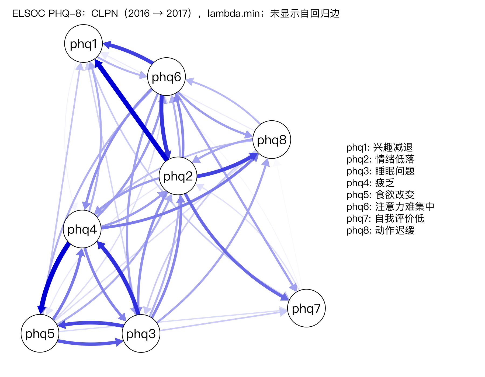

真实数据案例：ELSOC 的抑郁症状网络
用公开的 ELSOC 抑郁症状追踪数据演示课程主线的“仅 LASSO”CLPN。配套分析文件随课程提供，运行 R/case_elsoc.R 即可复现本页结果。
这一页是什么
课文里的网络分析都用模拟数据，因为只有模拟数据才有已知的“真实结构”可供对照。这一页用一份公开的真实追踪面板数据走完同一套流程：智利社会纵向研究（ELSOC）里抑郁症状的 8 道题，从 2016 预测 2017。方法就是课程主线的“仅 LASSO”CLPN（7.1–7.4），外加 200 次的边权重 bootstrap（8.2）。
建议学完 7.4 和 8.2 再看。它不是新方法，而是一次对照：真实数据里没有“标准答案”，你只能说数据支持什么、不支持什么。
下面所有人数、系数和区间都在构建网站时从 R/output/data_elsoc_log.txt 和 case_elsoc_*.csv 读入，对应脚本 R/data_elsoc.R、R/case_elsoc.R（种子 2026）。不要把这些数字抄进你自己的论文；你的样本、你的种子，数字会不同。
数据
来源：Reproducible Research, Centre for Social Conflict and Cohesion Studies COES (2022). Estudio Longitudinal Social de Chile 2016-2021. Harvard Dataverse, V1. https://doi.org/10.7910/DVN/LQMURF, UNF:6:z/vWFguq9fg03YaOLWFddA== [fileUNF]。Dataverse 页面把这一版标为 CC0 1.0，可以再分发。
课程附带两份文件，仓库和 clpn-course.zip 里都有：原始文件 data/elsoc/ELSOC_Wide_2016_2021_v1.00_R.RData（与 Dataverse 上的 V1 逐字节相同，MD5 a5a45571d39cf9db12e1949fdcb6fff2），以及由 R/data_elsoc.R 从它写出的分析文件 data/elsoc_phq8_wide.csv（原始样本，三波 PHQ-8 加性别、年龄，共 27 列）。做案例只需要：
source("R/case_elsoc.R") # CLPN 与 200 次 bootstrap，约 1–2 分钟想核对预处理，可以运行 source("R/data_elsoc.R")：它读附带的原始文件（文件不在时才从 Dataverse 下载），重新写出分析文件，结果应与课程附带的文件相同。不需要联网。
预处理做了什么
- 只用 2016 年招募的原始样本，不用 2018 年起 才加入的补充样本（他们没有前两波）。
- 负数是缺失码（−999 / −888 / −777 / −666），全部改成 NA。不保留原始编号。
- 只保留 PHQ 的前 8 题，三波（2016、2017、2018）。
第 9 题问的是“想到死亡或伤害自己”。这是需要临床跟进的高风险条目，不适合在教学练习里当成一个普通节点。研究中常用的 PHQ-8 就是去掉这一题的版本。脚本不导出第 9 题；请不要为了“凑齐 9 个节点”自己把它加回去。
另外两件读结果之前必须知道的事：
- 计分不是临床常用的 0–3。ELSOC 这 8 题是 1 = 从不 … 5 = 每天。8 题相加是 8–40，不是 PHQ-8 常见的 0–24。不要用 10 分、20 分这类临床划界来解释这里的总分。
- 题号和标准 PHQ-9 不完全一样。ELSOC 把标准卷的第 6 题（自我评价低）和第 7 题（注意力难集中）对调了。下表的中文按题目原文标注，不是按标准题号。节点叫 phq6 的，内容是注意力，不是“觉得自己很糟”。
谁进了分析
原始文件 4447 行 × 1848 列。原始样本 2928 人，补充样本 1519 人（不用）。原始样本中，PHQ-8 答完的人数：
| 波次 | 年份 | 这一波 8 题都答完 |
|---|---|---|
| 1 | 2016 | 2890 |
| 2 | 2017 | 2445 |
| 3 | 2018 | 2187 |
第 1–2 波都完整的有 2415 人。第 1–3 波都完整的有 2026 人，案例的 CLPN 只用这 2026 人（完整个案，不是多重插补）。其中女性 1259 人（62.1%），2016 年年龄均值 46.9（标准差 15.1，范围 18–88）。
从原始样本 2928 人收到三波都完整的 2026 人，少掉的人未必和留下的人一样（4.3）。本页没有做流失比较。若写成论文，这一句必须补上：留下的人在第一波的症状上，和没有做完三波的人有没有差别。
症状有多常见
下面是 2026 名三波都完整者的题目均值（1–5 分）。疲乏最高，自我评价低最低；三年之间均值只挪了一点点。
| 题目 | 中文 | 2016 均值 | 2016 标准差 | 2017 均值 | 2018 均值 |
|---|---|---|---|---|---|
| phq1 | 兴趣减退 | 1.86 | 1.01 | 1.88 | 1.93 |
| phq2 | 情绪低落 | 1.76 | 0.89 | 1.77 | 1.85 |
| phq3 | 睡眠问题 | 1.92 | 1.13 | 1.89 | 2.05 |
| phq4 | 疲乏 | 2.11 | 1.08 | 2.07 | 2.17 |
| phq5 | 食欲改变 | 1.82 | 1.07 | 1.77 | 1.88 |
| phq6 | 注意力难集中 | 1.62 | 0.98 | 1.61 | 1.70 |
| phq7 | 自我评价低 | 1.43 | 0.83 | 1.39 | 1.46 |
| phq8 | 动作迟缓 | 1.44 | 0.86 | 1.43 | 1.49 |
8 题相加（范围 8–40）：2016 年均值 13.95，2017 年 13.81，2018 年 14.53。2016 与 2017 的总分相关 r = 0.39。间隔大约一年，总分只中等程度地稳定——题目层面的网络看的就是：这点稳定性具体落在哪几道题之间。
估计的是哪一个模型
和 7.2 的主分析相同，不是 7.5 的完整流程（没有 SEM 重估，没有跨时间等值约束）：
2016 → 2017 的边
非零交叉滞后边 45 / 56 条，其中负边 0 条（这一次没有负边：非零的都是正的，其余被压成了 0）。最大 |B| = 0.113。边又多又小：lambda.min 在这个大样本上仍留下许多小边，与 7.5 课说的一致，交叉验证带来的假阳性不随 N 变大而消失。
并列最强的两条是“情绪低落”→“兴趣减退”，以及“疲乏”→“食欲改变”，样本估计都是 0.113。读法与 7.3 相同：在 2016 年其余症状（包括“兴趣减退”自己）都相同的人里，当年“情绪低落”高 1 个标准差的人，下一年“兴趣减退”的预测值大约高 0.113 个标准差。这是预测，不是“情绪低落导致了兴趣减退”。
| 从（T） | 中文 | 到（T+1） | 中文 | 样本 B | 2.5% | 97.5% | 被压成 0 的比例 |
|---|---|---|---|---|---|---|---|
| phq2 | 情绪低落 | phq1 | 兴趣减退 | 0.113 | 0.054 | 0.167 | 0.000 |
| phq4 | 疲乏 | phq5 | 食欲改变 | 0.113 | 0.040 | 0.179 | 0.000 |
| phq3 | 睡眠问题 | phq4 | 疲乏 | 0.092 | 0.044 | 0.145 | 0.000 |
| phq6 | 注意力难集中 | phq2 | 情绪低落 | 0.090 | 0.035 | 0.136 | 0.000 |
| phq6 | 注意力难集中 | phq1 | 兴趣减退 | 0.085 | 0.035 | 0.132 | 0.000 |
| phq2 | 情绪低落 | phq8 | 动作迟缓 | 0.084 | 0.011 | 0.144 | 0.010 |
| phq3 | 睡眠问题 | phq5 | 食欲改变 | 0.081 | 0.024 | 0.153 | 0.010 |
| phq5 | 食欲改变 | phq3 | 睡眠问题 | 0.074 | 0.022 | 0.132 | 0.000 |
上表是样本估计绝对值最大的 8 条。区间是 200 次个案重抽样的 2.5% 与 97.5% 分位数；最后一列是这 200 次里该系数被 LASSO 压成 0 的比例。正式报告不要用 200 次，见下面“bootstrap”。

R/output/case_elsoc_clpn.png。只画交叉滞后边，自回归没有画。colorblind 主题，与全课一致：蓝色 = 正，红色 = 负。这一次没有负的交叉滞后边，所以图上是蓝的。自回归：哪道题最“稳”
对角线是“今年的这道题预测明年的同一道题”（已控制其他 7 题）。最高的是“自我评价低”（0.219），最低的是“兴趣减退”（0.016）。最低的那一道几乎没有独特的自回归，下一年的高低更多是被其他症状预测的（下面的入期望影响会再看到这一点）。
| 题目 | 中文 | 自回归 B |
|---|---|---|
| phq1 | 兴趣减退 | 0.016 |
| phq2 | 情绪低落 | 0.132 |
| phq3 | 睡眠问题 | 0.157 |
| phq4 | 疲乏 | 0.140 |
| phq5 | 食欲改变 | 0.125 |
| phq6 | 注意力难集中 | 0.172 |
| phq7 | 自我评价低 | 0.219 |
| phq8 | 动作迟缓 | 0.121 |
出 / 入期望影响
只加交叉滞后边，不含自回归（与 7.4 相同）。出期望影响最高的是“情绪低落”（0.423），入期望影响最高的是“兴趣减退”（0.292）。最能预测别人的，和最容易被别人预测的，不是同一个节点。
| 节点 | 中文 | 出期望影响 | 入期望影响 |
|---|---|---|---|
| phq2 | 情绪低落 | 0.423 | 0.278 |
| phq6 | 注意力难集中 | 0.388 | 0.214 |
| phq4 | 疲乏 | 0.352 | 0.282 |
| phq3 | 睡眠问题 | 0.345 | 0.244 |
| phq5 | 食欲改变 | 0.244 | 0.241 |
| phq8 | 动作迟缓 | 0.133 | 0.244 |
| phq1 | 兴趣减退 | 0.062 | 0.292 |
| phq7 | 自我评价低 | 0.021 | 0.171 |
换一段时间、加两个协变量
用 2017 → 2018 再做一次
同一批人、同一种设定。非零交叉滞后边 41 / 56 条。与 2016 → 2017 在全部 56 个交叉滞后位置上（含被压成 0 的）的相关 r = 0.43。样本里最强的 8 条里，有 7 条在下一段仍为同方向且非零。
r = 0.43 是中等，不是“结构复现了”。一年后再看，大的方向有一部分还在，细的边换了很多。写的时候就写这个相关和这 7 条，不要写“结果在两段时间上一致”。
加上性别和年龄（不惩罚）
在三波都完整、并且性别与年龄也不缺的 2026 人上，把这两项作为协变量放进每个回归，penalty.factor = 0（不参与收缩，系数本身不画进网络）。非零交叉滞后边 47 / 56 条，与主分析在全部交叉滞后位置上的相关 r = 0.987。
边的格局几乎没变。这只能说明“在这个样本里，控制性别和年龄之后，题目之间的预测关系还在”，不能说明已经控制住了所有混杂（5.4）。没测的东西（收入、躯体疾病、社会支持）仍然可以同时推高今年的疲乏和明年的食欲改变。
这 200 次 bootstrap 说明什么、不说明什么
第 6 步是非参数 bootstrap：有放回地抽取 2026 人，重复 200 次，每次都重新做 10 折 CV 的 LASSO。这是 8.2 的思路，但是手写的、而且只有 200 次，不是课程主分析用的 bootnet 1000 次。脚本里把 B_BOOT 改成 1000，大约再要几分钟；写论文请用至少 1000 次。
最强 8 条里，区间不含 0 的有 8 条。读这句之前先记住三件限制：
- 这 8 条是先看了样本估计再挑出来的，不是分析前登记的假设。挑完再报“8 / 8 不含 0”，比事先指定一条边更容易显得“都显著”。
- 200 次重抽样时，“被压为 0 的比例”这类数只能以 1/200 为单位变化。这是分辨率，不是精度。精度要看蒙特卡罗误差：用 B 次重抽样估计一个真实值为 p 的比例，标准误约为 √(p(1 − p) / B)，B = 200、p = 0.05 时约 0.015，是分辨率 0.005 的三倍。区间端点同样不稳：200 次时，2.5% 和 97.5% 分位数各只由最外侧约 5 个重抽样结果决定，换一次种子就可能明显挪动。它也没有做 56 条边的多重比较校正（校正会怎样把 p 值抬上去，见 7.7）。
- 区间不含 0，只表示“这个预测系数没有被重抽样轻易压没”。它仍然不是因果，也不是 CS 系数。
写成报告时，至少写上这些局限
- 标准 CLPN 把被试间和被试内混在一起（5.3、7.5）。边里有一部分可能只是“长期更抑郁的人，每道题都更高”，不是“这个人今年比自己平时更情绪低落，所以明年兴趣更差”。
- 完整个案。三波都答完的人和中途缺失的人可能不同，本页没有比较。
- 只有 lambda.min，没有 SEM 重估。45 条非零边里会有假阳性。
- 未检验测量不变性（7.6用课程模拟数据和教练数据演示了做法，本案例未对 ELSOC 检验）。不能默认 2016 年的“疲乏”和 2018 年的“疲乏”是同一把尺子。
- 间隔约一年，看不到几周之内的起伏。量表是 1–5 的频率题，总分不能对临床划界。
- 一个国家、一个年代的社区样本。不能写成“抑郁症状一般都是这样互相预测的”。
可借用的句式在写作工作坊的“结果”和“局限”两节。想对照别人怎么写真实数据，见论文阅读包里的 Funkhouser 等（2021）和 Grygiel 等（2026）。
读完检查
为什么这个案例不用 PHQ 的第 9 题？
- 脚本是因为内容把它排除的，不是因为缺失率。
- 对。分析文件里也没有这一题，请不要自己从原始数据加回去。
- 案例没有说它反向计分。
- 课程模拟数据就是 9 个节点。
“情绪低落 → 兴趣减退”的 B = 0.113，下面哪句可以说？
- “导致”是因果语言。CLPN 没有排除未测量的混杂，也没有分开被试间和被试内。
- 入期望影响高只表示“易被其他题预测”。本页没有 CS 系数，也不能从中心性推出干预靶点。
- 对。还要写上区间、标准化单位，以及这不是因果。
- 200 次、又是事后挑出的边，不能说“一定”。
三波 PHQ-8 都答完、进入这次 CLPN 的有多少人？（填整数）
你自己跑的时候
- 用
clpn-course.Rproj打开项目，运行source("R/case_elsoc.R")。 - 对照
R/output/case_elsoc_log.txt和本页。同一 R、同一套包、种子 2026 时，系数应与本页一致；你若改了B_BOOT或 R 版本，区间可以略有不同。 - 用这份数据写东西时，按上面“数据”一节的格式引用 ELSOC。
变量含义、许可和引用格式也写在数据字典最后一节。
CLPN 从零开始 · 返回大纲